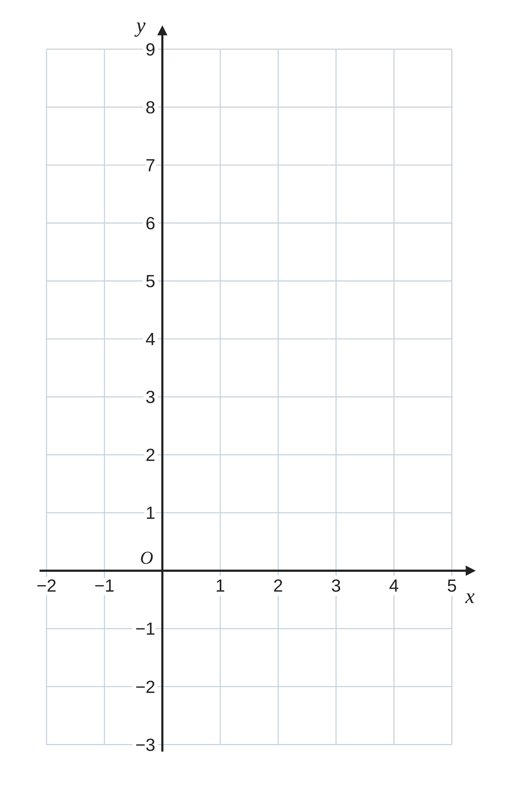
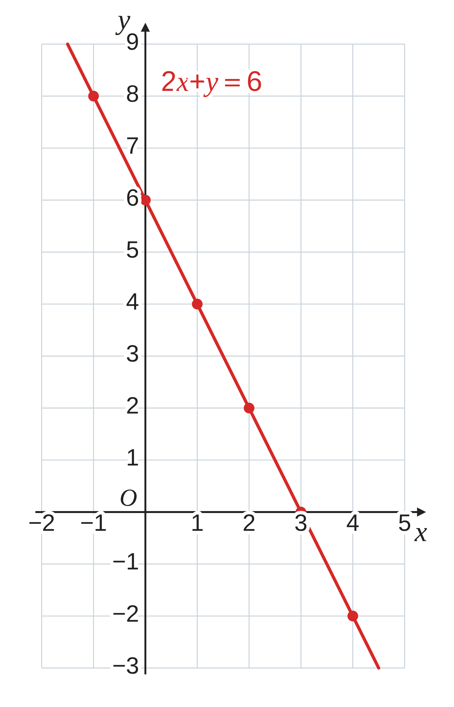
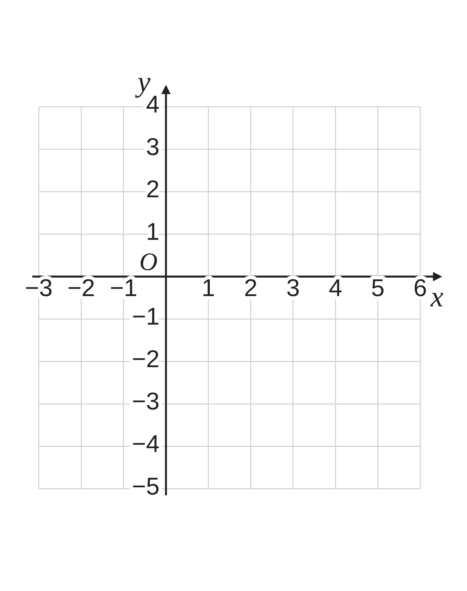
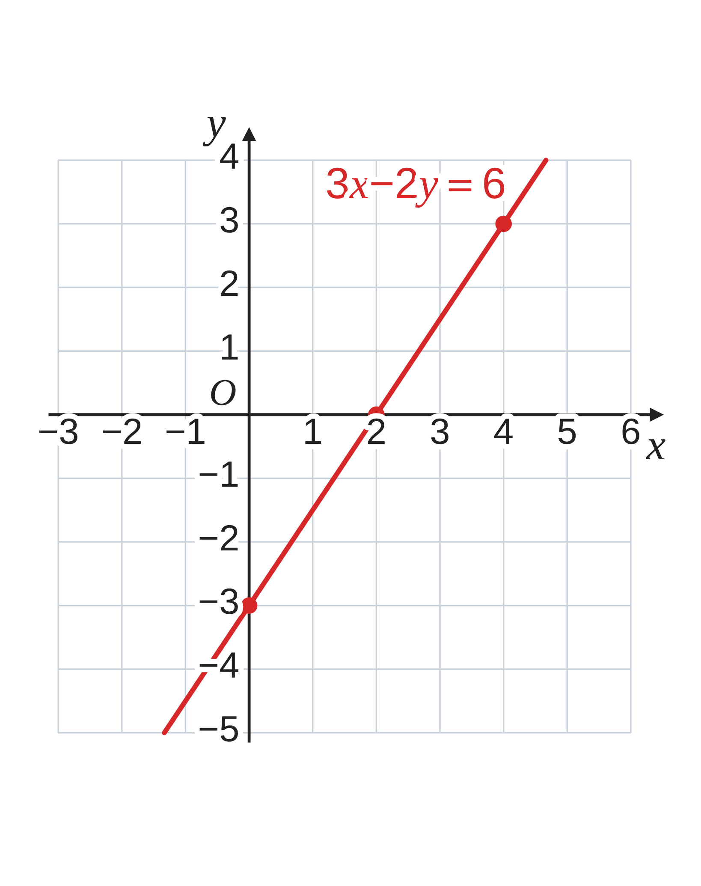
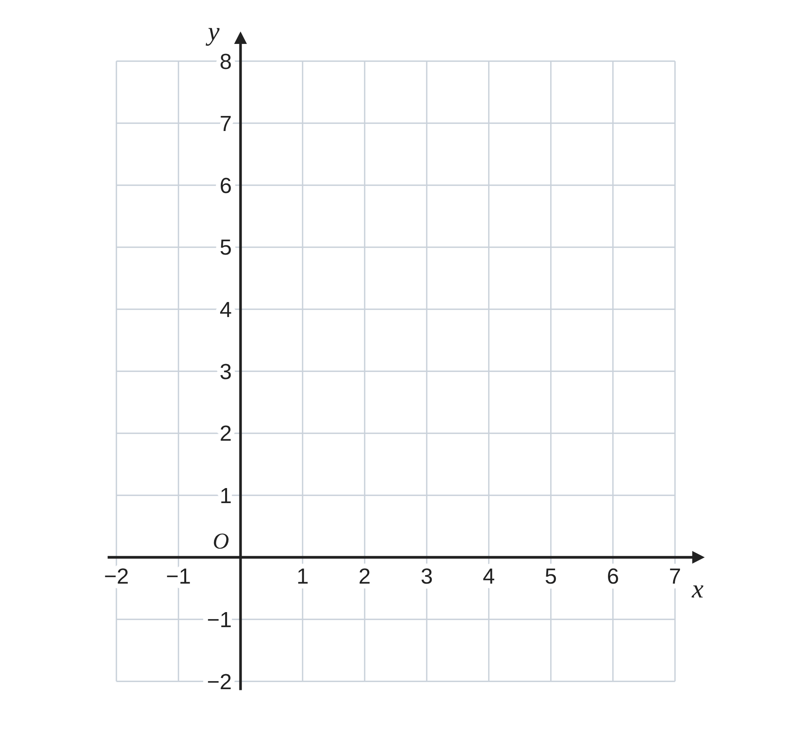
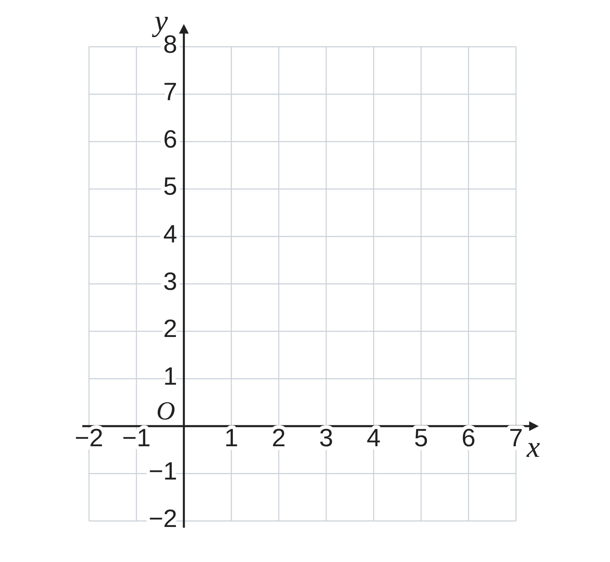

ペア学習
第11時 2元1次方程式の解を、グラフに表そう
第10時の重要語句から、1人1問ずつ、言葉を選んで出題する。
聞かれた人は、その言葉の意味を、自分の言葉で言う。
2点を通る直線
傾き
増加量
代入
連立方程式
一次関数 第11時 2元1次方程式の解を、グラフに表そう
めあて
第11時 2元1次方程式の解を、グラフに表そう
学習課題
2元1次方程式 2x+y＝6 の解 (x, y) を、
座標とする点を、右の座標平面にとろう。
点は、どのようにならぶだろう。
【表】x の値に対する y の値を、求めよう。
| x | −1 | 0 | 1 | 2 | 3 | 4 |
|---|---|---|---|---|---|---|
| y |
【気づいたこと】点をとって、気づいたことを書こう。

一次関数 第11時 2元1次方程式の解を、グラフに表そう
学習課題のまとめ
第11時 2元1次方程式の解を、グラフに表そう
| x | −1 | 0 | 1 | 2 | 3 | 4 |
|---|---|---|---|---|---|---|
| y | 8 | 6 | 4 | 2 | 0 | −2 |
点 (−1, 8)、(0, 6)、(1, 4)、(2, 2)、(3, 0)、(4, −2) は、
一直線上にならぶ。
x が 0.5 のとき y は 5、1.5 のとき y は 3 の点も、
同じ直線上にある。
2x+y＝6 を y について解くと y＝−2x+6
（傾き −2、切片 6 の一次関数）

一次関数 第11時 2元1次方程式の解を、グラフに表そう
ことば
第11時 2元1次方程式の解を、グラフに表そう
2元1次方程式 ax+by＝c の解 (x, y) を、座標とする点を、
座標平面にとっていくと、 になる。
この直線を、方程式の という。
方程式を y について と、傾きと切片がわかる。
例 2x+y＝6 → y＝
x 軸との交点は y＝ 、y 軸との交点は x＝ とおいて求められる。
一次関数 第11時 2元1次方程式の解を、グラフに表そう
ことば
第11時 2元1次方程式の解を、グラフに表そう
2元1次方程式 ax+by＝c の解 (x, y) を、座標とする点を、
座標平面にとっていくと、直線になる。
この直線を、方程式のグラフという。
方程式を y について解くと、傾きと切片がわかる。
例 2x+y＝6 → y＝−2x+6
x 軸との交点は y＝0、y 軸との交点は x＝0 とおいて求められる。
一次関数 第11時 2元1次方程式の解を、グラフに表そう
例題
第11時 2元1次方程式の解を、グラフに表そう
方程式 3x−2y＝ のグラフを、
右の座標平面にかこう。
y について解いて、
傾きと切片を求めよう。

一次関数 第11時 2元1次方程式の解を、グラフに表そう
例題 解答
第11時 2元1次方程式の解を、グラフに表そう
方程式 3x−2y＝6 のグラフを、右の座標平面にかこう。
y について解く −2y＝−3x+6 y＝(3⁄2)x−3
傾き (3⁄2)、切片 −3
点 (0, −3) から、右へ 2、上へ 3 … 点 (2, 0)
（別の方法）軸との交点 (2, 0)、(0, −3) を結ぶ。
確かめ (2, 0)：3×2−2×0＝6 ○
(0, −3)：3×0−2×(−3)＝6 ○

一次関数 第11時 2元1次方程式の解を、グラフに表そう
考えよう
第11時 2元1次方程式の解を、グラフに表そう
左 x+y＝6、2x+y＝6、3x+y＝6
右 2x+y＝2、2x+y＝4、2x+y＝6


発展
演習まで解き終わった人は、考えてみよう！
方程式 2x+y＝6 と、両辺を 2 倍した 4x+2y＝12
のグラフは、どうなるだろう。
理由も考えよう。
①
左と右の座標平面に、
3本ずつ、グラフをかこう。
②
気づいたこと
③
なぜ、そうなるのだろう。
方程式を y について解いて、
説明しよう。
一次関数 第11時 2元1次方程式の解を、グラフに表そう
振り返り
第11時 2元1次方程式の解を、グラフに表そう
今日のめあて
方程式のグラフ
y について解く
傾き
切片
x 軸との交点・y 軸との交点
今日わかったことを、ペアで1つずつ言い合おう。
ワークシートと演習プリントを出そう。（未完成でも出す）
一次関数 第11時 2元1次方程式の解を、グラフに表そう